esculturas quânticas
quantum sculptures
Alexandre Rangel
Obra interativa que explora possibilidades infinitas de interação entre o corpo humano e a matéria escultórica virtual.
Esta peça convida o público a imergir em um sistema dinâmico onde os movimentos do corpo tornam-se tanto entrada quanto catalisador para transformações contínuas. Cada gesto, postura ou presença ativa uma cascata de respostas visuais e sonoras, formando uma escultura viva e em constante mutação, que só existe no instante da interação. A instalação não se configura como um objeto fixo, mas como um campo relacional — sensível, reativo e contingente.
As formas geradas pelo sistema dialogam estética e conceitualmente com a teoria dos campos quânticos, que postula que partículas não ocupam posições fixas, mas emergem como possibilidades moldadas por campos de energia e pela observação. Nesse sentido, a presença do espectador — o simples ato de olhar, mover-se ou interagir — torna-se um fator determinante na configuração do ambiente virtual.
O que se revela não é uma obra estática, mas uma ecologia mutável de som e imagem, profundamente dependente da presença, da proximidade e do gesto. Isso aponta para um interesse maior na dissolução das fronteiras entre observador e sistema, sujeito e objeto, material e imaterial. A instalação opera como um espelho — não da aparência, mas da influência: revelando como ações sutis geram ondas de transformação no espaço virtual e sonoro.
Ao referenciar teorias da física e, ao mesmo tempo, ancorar a experiência na interação corporal, a obra busca colapsar a distância entre tecnologia e intuição, ciência e sensorialidade — oferecendo um espaço onde o efêmero se torna tangível e a percepção se transforma em forma.
Interactive work exploring infinite possibilities of interaction between the human body and virtual sculptural matter.
This piece invites participants to immerse themselves in a dynamic system where body movements become both input and catalyst for continuous transformation. Each gesture, posture, or presence activates a cascade of visual and sonic responses, forming a living, evolving sculpture that exists only in the moment of interaction. The installation is not a static object but a relational field—sensitive, reactive, and contingent.
The forms generated by the system are rooted in an aesthetic and conceptual dialogue with quantum field theory, which postulates that particles do not occupy fixed positions, but emerge as possibilities shaped by energy fields and observation. In this sense, the presence of the viewer—their very act of looking, moving, or engaging—becomes a determining factor in the configuration of the virtual environment.
What emerges is not a fixed artwork, but a mutable ecology of sound and image, deeply dependent on presence, proximity, and gesture. This speaks to a broader interest in the dissolution of boundaries between observer and system, subject and object, material and immaterial. The installation operates like a mirror, not of appearance, but of influence: revealing how subtle actions generate waves of transformation in both virtual space and sound.
By referencing theories from physics while grounding the experience in embodied interaction, the work seeks to collapse the distance between technology and intuition, science and sensoriality—offering a space where the ephemeral becomes tangible, and perception becomes form.

Centro Cultural FIESP
São Paulo, 2022FIESP Cultural Center
São Paulo, 2022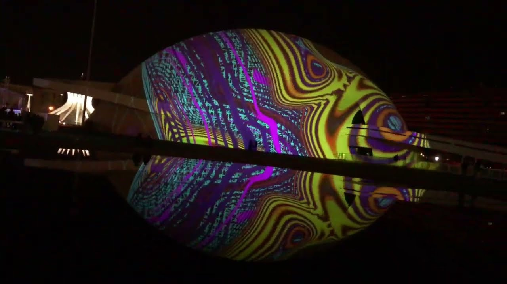
Brasília Mapping Festival
Projeção Museu Nacional da RepúblicaBrasília, 2019
Brasília Mapping Festival
National Museum of the RepublicBrasília, 2019
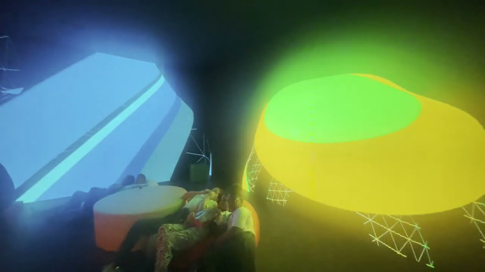
TokenNation / NFT Brasil
Bienal de São Paulo, 2025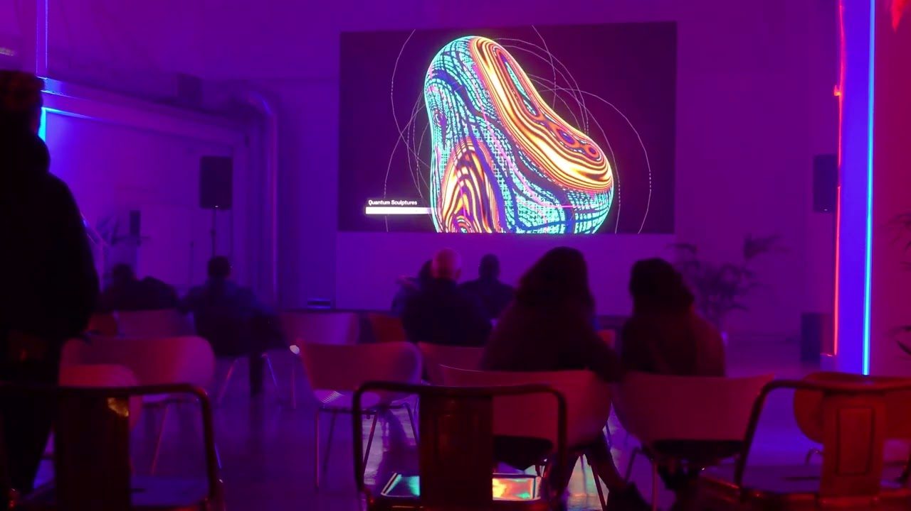
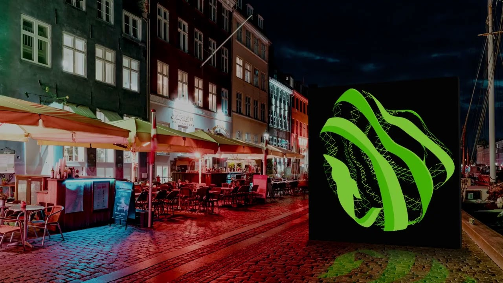
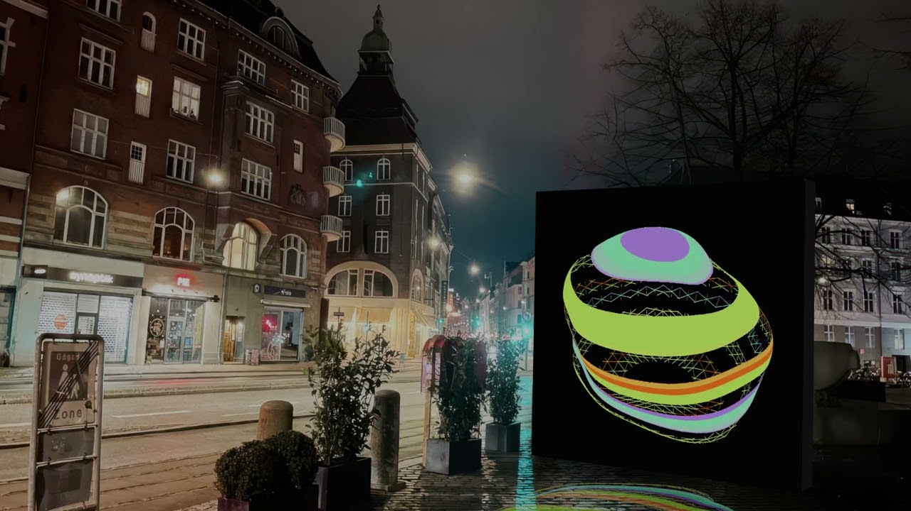
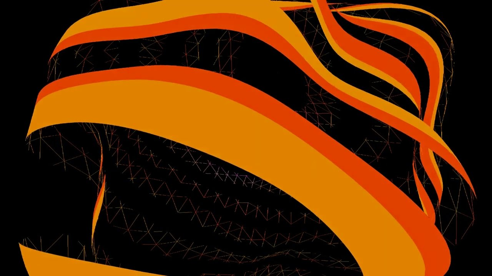
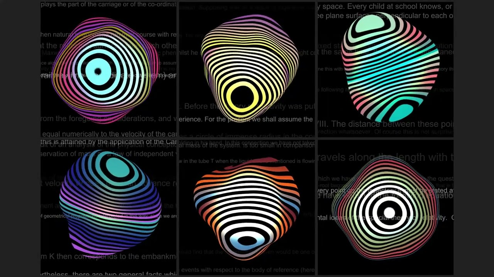
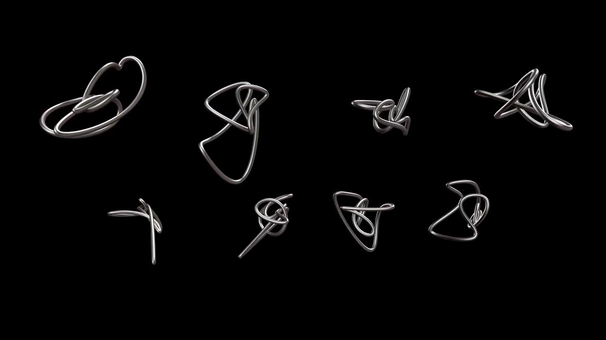
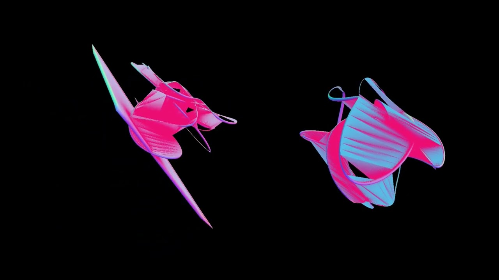
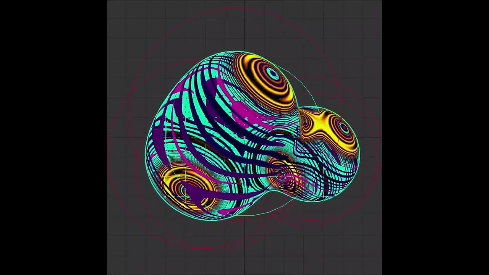
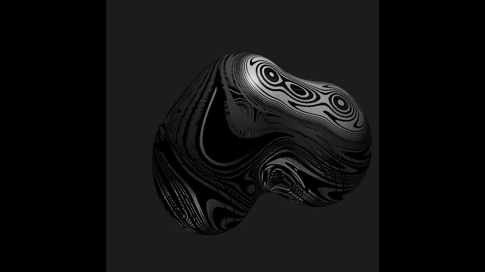
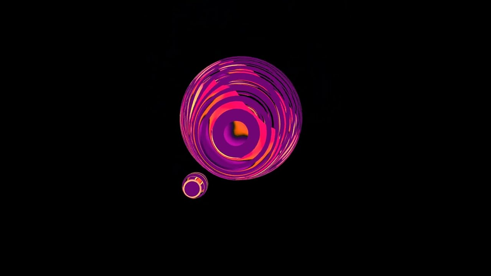
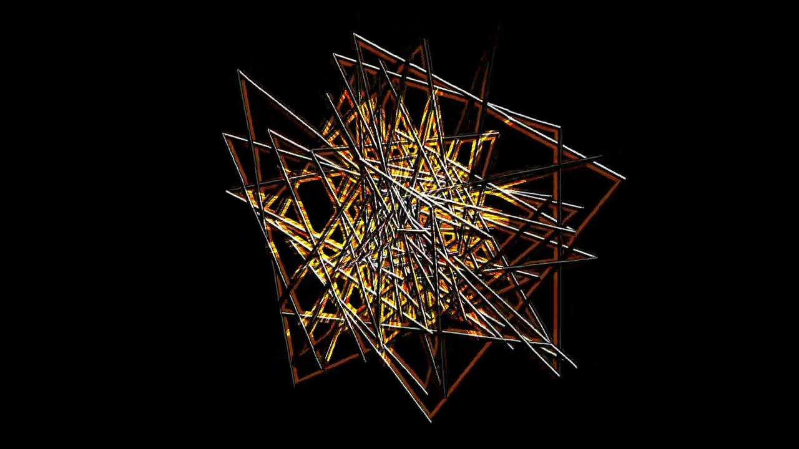
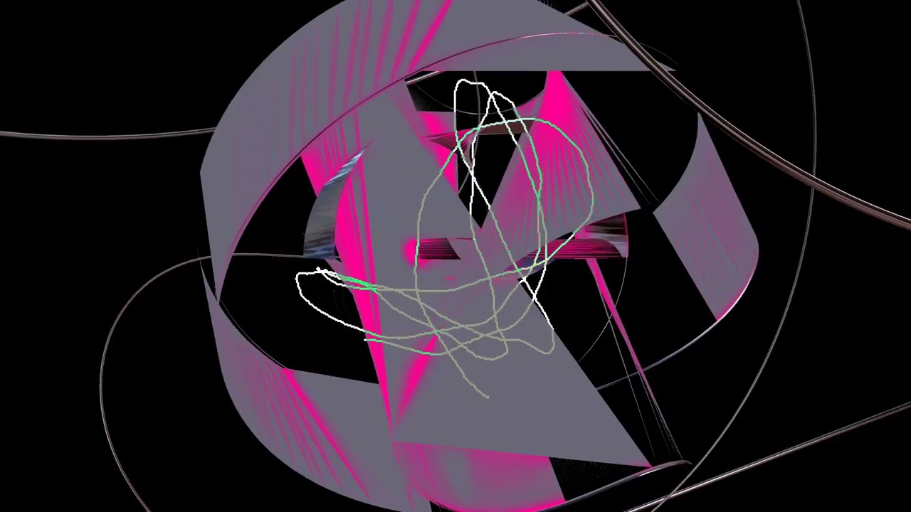
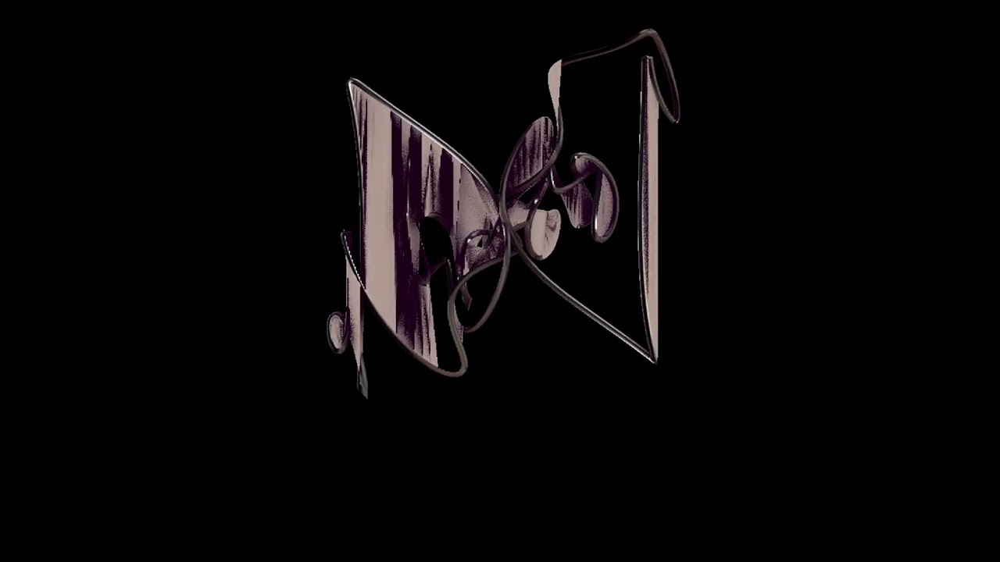